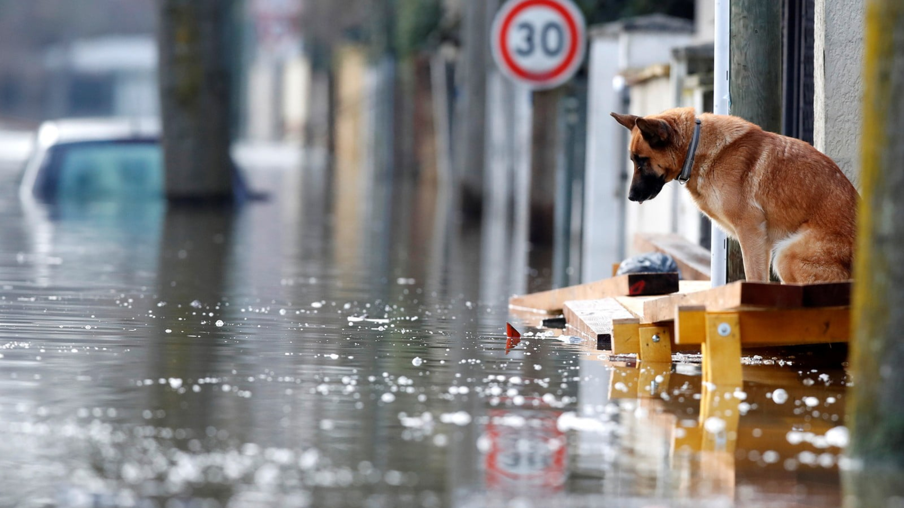
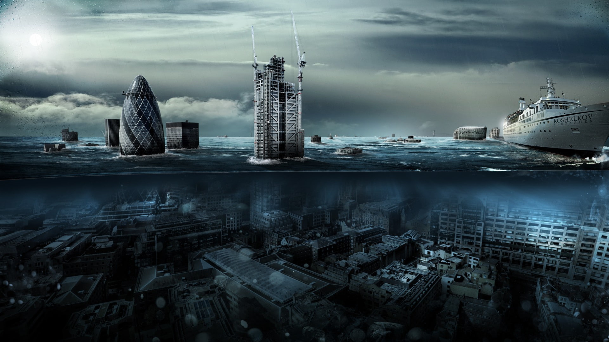

The United Arab Emirates (UAE) has more exposure to natural hazards than has been previously recognized. In the last 20 years the UAE has been subject to earthquakes, landslides, floods and tropical storms. This chapter examines the structure and procedures for management of natural disasters in the UAE, in particular issues of governance, accountability and communication within states that are part of a federal system. The study involved interviews with officials at both federal and emirate levels and case studies are presented of the impact of recent natural hazard events. Two emirates were selected for more detailed examination, Fujairah the most hazard prone and a rural emirate and Dubai which is a highly urbanized emirate which has undergone rapid development. There is now increasing awareness of natural hazards in the UAR and progress is being made at regional and federal levels. There needs to be a clear delineation between regional and federal roles and an understanding of the need for effective channels of information to relevant agencies.
UAE's history and precautions
Against Natural Disasters

A Thunderstorm, or Electrical Storm, is a weather formation where lightning and thunder are produced by a cumulonimbus cloud.

Shifts and collisions of tectonic plates cause earthquakes. The epicenter of an earthquake is the surface location directly above the quake's hypocenter,

Floods are the most frequent type of natural disaster and occur when an overflow of water submerges land that is usually dry.

Tsunamis with runups over one meter (3.28 feet) are particularly dangerous to people and property.
United Arab Emirates: disaster management with regard to rapid onset natural disasters
Lightning is a dazzling light that suddenly appears in the sky in turbulent weather. It is a massive natural
electrical discharge resulting from the collision between two clouds, one with negative electric charge and
the other with positive electric charge. The light is followed by a booming sound known as “thunder”.
Together, lightning and thunder form a “thunderbolt”.
Lightning is usually harmless because most of its charges do not reach the Earth. But in some cases, if it is strong enough, it can uproot a tree, destroy a chimney or even kill a person or an animal. However, it has been shown that most of those who were struck by lightning were usually taking shelter under a tree, and this is the most dangerous thing to do when a thunderstorm breaks out because trees and high-rise buildings actually conduce thunderbolts. Consequently, the roofs of buildings should be equipped with lightning rods; metal chains that absorb electricity and divert their fatal charges to the centre of the Earth. Lightning rods absorb the charges and scatter them peacefully into the ground, away from the building. The massive energy of a thunderbolt is capable of destroying anything that stands in its way
Earthquakes kill, on average, about 20,000 people every year
An earthquake is a sudden, rapid shaking of the ground caused by the shifting of rocks deep underneath the earth’s surface. Earthquakes can cause fires, tsunamis, landslides or avalanches. While they can happen anywhere without warning, areas at higher risk for earthquakes include Alaska, California, Hawaii, Oregon, Puerto Rico, Washington and the entire Mississippi River Valley.
Overview. Floods are the most frequent type of natural disaster and occur when an overflow of water submerges land that is usually dry. Floods are often caused by heavy rainfall, rapid snowmelt or a storm surge from a tropical cyclone or tsunami in coastal areas.
Floods are the most frequent type of natural disaster and occur when an overflow of water submerges land that is usually dry. Floods are often caused by heavy rainfall, rapid snowmelt or a storm surge from a tropical cyclone or tsunami in coastal areas. Floods can cause widespread devastation, resulting in loss of life and damages to personal property and critical public health infrastructure. Between 1998-2017, floods affected more than 2 billion people worldwide. People who live in floodplains or non-resistant buildings, or lack warning systems and awareness of flooding hazard, are most vulnerable to floods.
Tsunamis with runups over one meter (3.28 feet) are particularly dangerous to people and property.
A tsunami is a series of enormous ocean waves caused by earthquakes, underwater landslides, volcanic eruptions or asteroids. A tsunami can kill or injure people and damage or destroy buildings and infrastructure as waves come in and go out. Tsunamis can: Travel 20-30 miles per hour with waves 10-100 feet high.